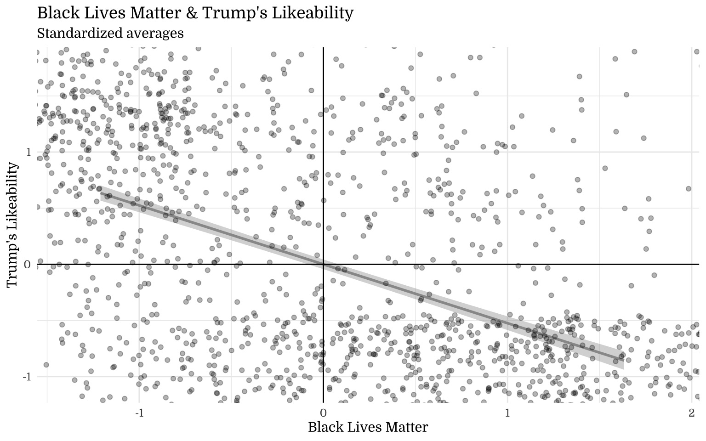
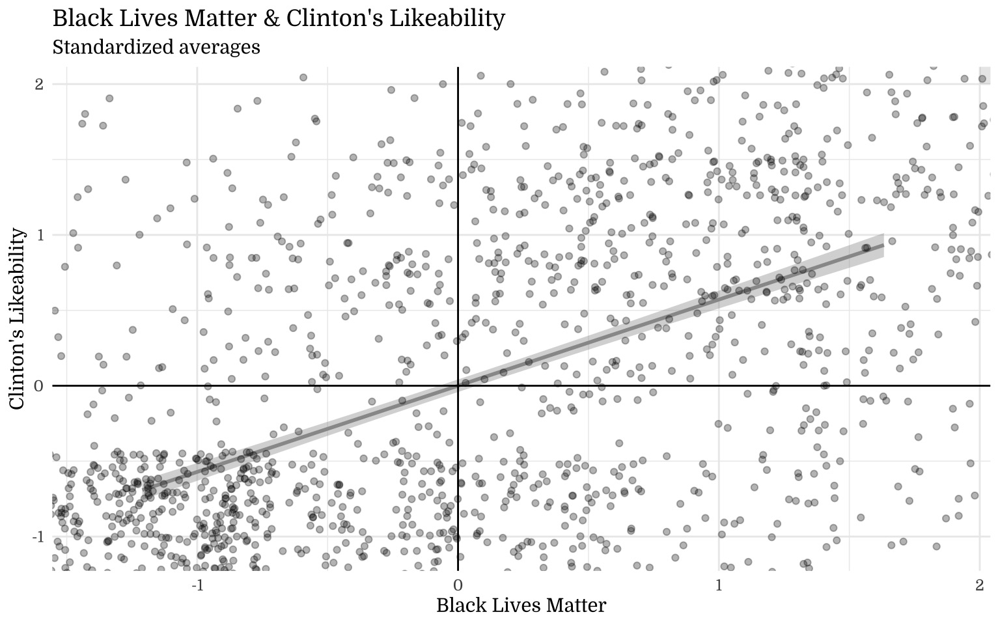
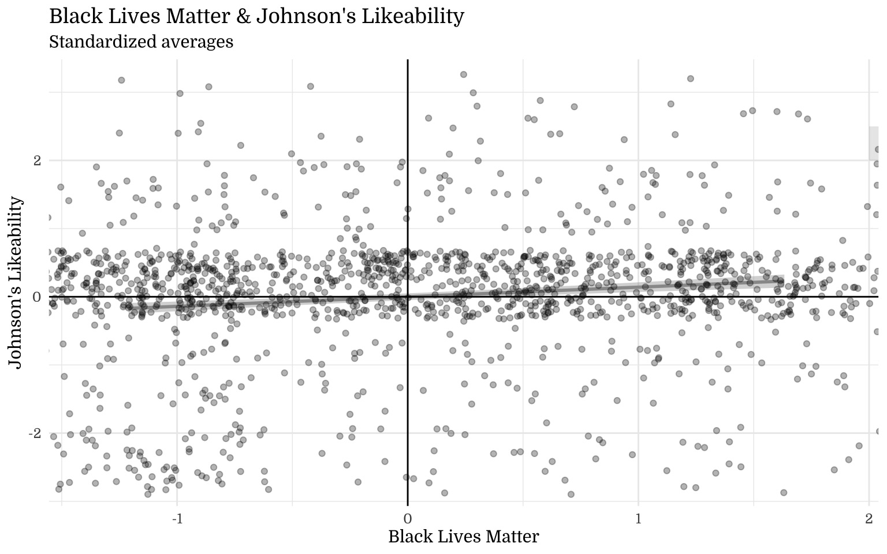
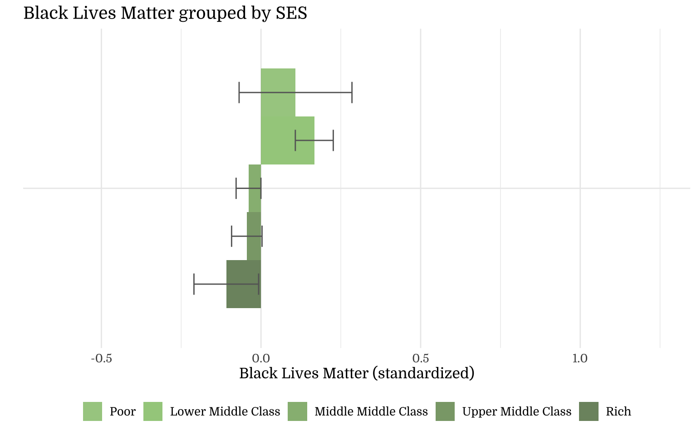
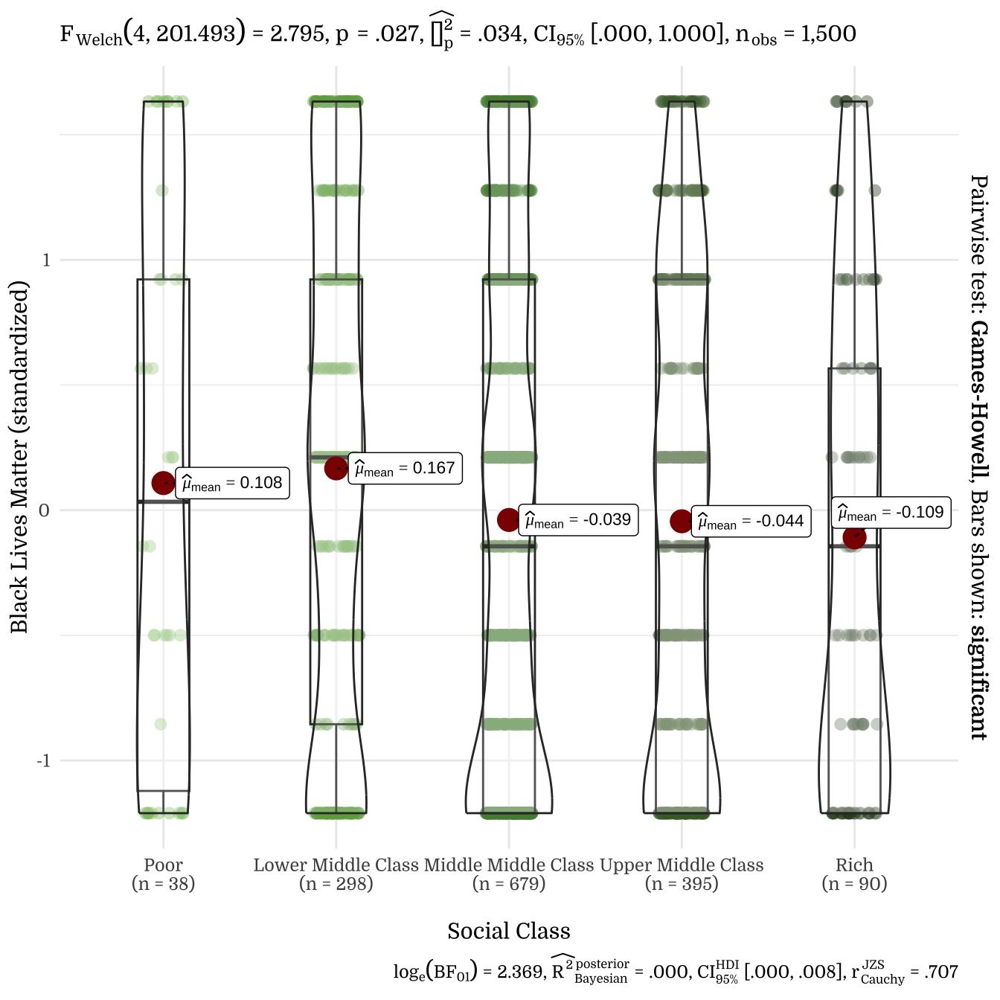

| vars | n | mean | sd | median | min | max | range | se | |
|---|---|---|---|---|---|---|---|---|---|
| Soc_mov_2 | 1 | 1500 | 5.59 | 2.81 | 5 | 1 | 9 | 8 | 0.07 |
Black Lives Matter [2016]
A Politico-Psychological Analysis
1 Study Characteristics
1.1 Items: Black Lives Matter
1.2 Sample
N=1500
To conduct a exploratory and a confirmatory large surveys during the general election, we hired a professional survey firm (SSI, a US-based market research company that recruits participants from a panel of 7,139,027 American citizens; more information can be found at www.surveysampling.com (now https://www.dynata.com/) to recruit a nationally representative sample of 1,500 Americans (50.7% women) who completed study materials during the general election from August 16-September 9, 2016. (Information about sampling and exclusion criteria is included in the Supplement). The age distribution was as follows: 18-24 (12.9%), 25-34 (17.6%), 35-44 (17.5%), 45-54 (19.5%), 55-65 (15.6%) and older than 65 (16.9%). The ethnic breakdown was: White/European American (82.5%), Black/African American (7.7%), Latino (5.9%) and “Other” (4.0%). Concerning religion, 67.6% identified as Christian, 17.1% as religiously affiliated but not Christian, and 15.3% as Atheist/Agnostic. With respect to education 35.1% indicated “high school only or lower,” 31.4 % indicated “some college,” and 33.6% indicated having received a “Bachelor” or “Graduate” degree. 2424 participants were directed to the survey, 1885 of which finished the survey (attrition rate 22%).
We followed recommendations to minimize the problem of careless responding in online studies. Specifically, we employed 10 random attention questions and time controls to check for data quality. There were 385 participants who failed more than one attention check or finished the survey in under ~22 minutes and were therefore excluded from the sample. For the 1500 participants who successfully finished the survey, completion time was 67 minutes on average (MD: 51min).
2 Descriptives
2.1 Means, SD, Range, & SE
2.2 Response Distribution
{kind=link}
{kind=link}
3 Demographics
3.2 Gender
{kind=link}
{kind=link}
| Gender | N | Mean | SD |
|---|---|---|---|
| Male | 740 | -0.18 | 0.97 |
| Female | 760 | 0.18 | 0.99 |
3.3 Age
{kind=link}
{kind=link}
| Age | N | Mean | SD |
|---|---|---|---|
| 18-24 years | 193 | 0.34 | 1.03 |
| 25-34 years | 264 | 0.27 | 0.96 |
| 35-44 years | 263 | 0.03 | 1.00 |
| 45-54 years | 292 | -0.12 | 0.96 |
| 55-64 years | 234 | -0.04 | 0.98 |
| 65+ | 254 | -0.40 | 0.92 |
3.4 Education
{kind=link}
{kind=link}
| Education | N | Mean | SD |
|---|---|---|---|
| Less than High School | 51 | 0.24 | 1.06 |
| High School | 475 | 0.01 | 1.01 |
| Some College | 471 | -0.01 | 1.03 |
| Bachelor | 310 | -0.02 | 0.96 |
| Graduate | 193 | -0.03 | 0.96 |
3.5 Income Levels
{kind=link}
{kind=link}
| Income Levels | N | Mean | SD |
|---|---|---|---|
| $150,000 + | 95 | -0.29 | 0.90 |
| $100,000-$149,999 | 160 | -0.11 | 0.99 |
| $75,000-$99,999 | 192 | -0.05 | 0.97 |
| $35,000-$49,999 | 227 | -0.03 | 0.99 |
| $50,000-$74,999 | 292 | -0.01 | 0.98 |
| $25,000-$34,999 | 176 | 0.00 | 1.03 |
| $15,000-$24,999 | 180 | 0.16 | 1.07 |
| Less than $15,000 | 178 | 0.20 | 1.00 |
3.6 Ethnicity
{kind=link}
Note on the Okabe-Ito color palette The Okabe-Ito color palette (seen above) is a set of colorblind-friendly categorical colors available in R. We are using this palette for graphs with non-ordered variables (e.g., groups, categories) for accessibility.
{kind=link}
| Ethnicity | N | Mean | SD |
|---|---|---|---|
| Caucasian/European origin | 1237 | -0.14 | 0.96 |
| Black/African American | 115 | 1.00 | 0.69 |
| Latino | 88 | 0.42 | 1.01 |
| Asian/Pacific Islander | 29 | 0.36 | 0.85 |
| Native American | 13 | 0.02 | 1.07 |
| Other | 18 | 0.45 | 0.88 |
3.7 Occupation
{kind=link}
{kind=link}
| Occupation | N | Mean | SD |
|---|---|---|---|
| Employed | 768 | 0.02 | 0.98 |
| Retired | 268 | -0.22 | 0.96 |
| Unemployed | 146 | 0.13 | 1.00 |
| Parent | 104 | -0.07 | 1.03 |
| Disabled | 98 | -0.16 | 1.01 |
| Student | 85 | 0.54 | 1.01 |
| Full-time caregiver | 31 | 0.11 | 0.97 |
3.8 Area
{kind=link}
{kind=link}
| Area | N | Mean | SD |
|---|---|---|---|
| Urban | 955 | 0.14 | 1.00 |
| Rural | 545 | -0.24 | 0.95 |
3.9 Religious Affiliation
{kind=link}
{kind=link}
| Religious Affiliation | N | Mean | SD |
|---|---|---|---|
| Christian | 1014 | -0.16 | 0.97 |
| Muslim | 9 | 0.41 | 0.87 |
| Jewish | 52 | 0.31 | 0.91 |
| Atheist/Agnostic | 230 | 0.35 | 0.99 |
| Not listed, No religion | 195 | 0.32 | 1.00 |
3.10 Section Summary
| Black Lives Matter | Black Lives Matter | |||||
| Predictors | Estimates | CI | p | Estimates | CI | p |
| (Intercept) | 5.63 | 4.56 – 6.70 | <.001 | 5.92 | 5.05 – 6.80 | <.001 |
| SES F [Middle Middle Class] |
-0.40 | -1.10 – 0.30 | .257 | |||
| SES F [Poor] | 0.44 | -0.69 – 1.57 | .448 | |||
| SES F [Rich] | -0.18 | -1.83 – 1.47 | .832 | |||
| SES F [Upper Middle Class] |
-0.27 | -1.41 – 0.86 | .636 | |||
| AgeF25-34 years | 0.02 | -0.50 – 0.54 | .943 | |||
| AgeF35-44 years | -0.25 | -0.79 – 0.30 | .375 | |||
| AgeF45-54 years | -0.62 | -1.16 – -0.08 | .025 | |||
| AgeF55-64 years | -0.36 | -0.95 – 0.24 | .239 | |||
| AgeF [65+] | -1.12 | -1.79 – -0.45 | .001 | |||
| SexF [Male] | -0.89 | -1.17 – -0.60 | <.001 | -1.01 | -1.29 – -0.74 | <.001 |
| EduF [High-school] | 0.04 | -0.79 – 0.88 | .917 | -0.24 | -0.98 – 0.49 | .516 |
| EduF [Some college] | -0.09 | -0.93 – 0.75 | .832 | -0.47 | -1.21 – 0.27 | .215 |
| EduF [Bachelor] | 0.22 | -0.79 – 1.23 | .672 | -0.18 | -0.95 – 0.59 | .647 |
| EduF [Graduate] | 0.37 | -0.81 – 1.55 | .539 | -0.09 | -0.90 – 0.71 | .820 |
| IncF [$15,000-$24,999] | 0.63 | -0.06 – 1.32 | .072 | |||
| IncF [$25,000-$34,999] | 0.04 | -0.65 – 0.73 | .901 | |||
| IncF [$35,000-$49,999] | 0.04 | -0.77 – 0.85 | .919 | |||
| IncF [$50,000-$74,999] | 0.05 | -0.75 – 0.85 | .906 | |||
| IncF [$75,000-$99,999] | 0.12 | -0.72 – 0.97 | .771 | |||
| IncF [$100,000-$149,999] | -0.10 | -1.14 – 0.94 | .851 | |||
| IncF [$150,000 +] | -0.46 | -1.53 – 0.62 | .406 | |||
| EthF [Black/African American] |
2.88 | 2.38 – 3.37 | <.001 | 2.96 | 2.46 – 3.45 | <.001 |
| EthF [Latino] | 1.03 | 0.47 – 1.59 | <.001 | 1.15 | 0.59 – 1.71 | <.001 |
| EthF [Asian/Pacific Islander] |
0.70 | -0.26 – 1.66 | .153 | 0.67 | -0.30 – 1.63 | .174 |
| EthF [Native American] | -0.02 | -1.41 – 1.37 | .979 | 0.26 | -1.13 – 1.65 | .716 |
| EthF [Other] | 1.23 | 0.06 – 2.41 | .040 | 1.25 | 0.06 – 2.43 | .039 |
| OccF [Employed] | -0.67 | -1.38 – 0.05 | .068 | -1.19 | -1.77 – -0.60 | <.001 |
| OccF [Unemployed] | -1.00 | -1.73 – -0.27 | .007 | -1.27 | -1.95 – -0.58 | <.001 |
| OccF [Full-time caregiver] |
-0.76 | -1.86 – 0.33 | .172 | -1.16 | -2.21 – -0.11 | .030 |
| OccF [Retired] | -0.23 | -1.09 – 0.64 | .609 | -1.24 | -1.88 – -0.60 | <.001 |
| OccF [Parent] | -1.29 | -2.11 – -0.47 | .002 | -1.67 | -2.41 – -0.92 | <.001 |
| OccF [Disabled] | -1.46 | -2.39 – -0.53 | .002 | -1.52 | -2.26 – -0.77 | <.001 |
| AreaF [Rural] | -0.68 | -0.95 – -0.40 | <.001 | -0.69 | -0.96 – -0.41 | <.001 |
| RelF [Muslim] | 0.19 | -1.50 – 1.87 | .829 | 0.35 | -1.34 – 2.04 | .685 |
| RelF [Jewish] | 1.30 | 0.57 – 2.02 | <.001 | 1.22 | 0.50 – 1.95 | .001 |
| RelF [Atheist/Agnostic] | 1.23 | 0.86 – 1.61 | <.001 | 1.34 | 0.97 – 1.71 | <.001 |
| RelF [Not listed, No religion] |
0.81 | 0.41 – 1.21 | <.001 | 0.96 | 0.56 – 1.36 | <.001 |
| Observations | 1500 | 1500 | ||||
| R2 / R2 adjusted | .229 / .210 | .209 / .198 | ||||
| Political Orientation | Social Political Orientation | Economic Political Orientation | Composite Political Orientation | |||||||||
| Predictors | Estimates | CI | p | Estimates | CI | p | Estimates | CI | p | Estimates | CI | p |
| (Intercept) | 5.12 | 4.68 – 5.55 | <.001 | 4.67 | 4.19 – 5.14 | <.001 | 5.29 | 4.80 – 5.78 | <.001 | 5.03 | 4.61 – 5.44 | <.001 |
| Black Lives Matter | -0.39 | -0.42 – -0.35 | <.001 | -0.39 | -0.43 – -0.35 | <.001 | -0.44 | -0.48 – -0.40 | <.001 | -0.40 | -0.44 – -0.37 | <.001 |
| Age | 0.12 | 0.05 – 0.18 | <.001 | 0.12 | 0.05 – 0.18 | .001 | 0.11 | 0.04 – 0.18 | .002 | 0.11 | 0.06 – 0.17 | <.001 |
| Income | 0.04 | -0.01 – 0.10 | .124 | -0.05 | -0.10 – 0.01 | .126 | 0.08 | 0.02 – 0.14 | .007 | 0.03 | -0.02 – 0.08 | .314 |
| Religiosity | 0.30 | 0.27 – 0.34 | <.001 | 0.42 | 0.38 – 0.46 | <.001 | 0.22 | 0.18 – 0.26 | <.001 | 0.31 | 0.28 – 0.35 | <.001 |
| Education | -0.09 | -0.19 – 0.01 | .092 | -0.13 | -0.24 – -0.02 | .025 | 0.08 | -0.03 – 0.19 | .173 | -0.05 | -0.14 – 0.05 | .355 |
| Observations | 1500 | 1500 | 1500 | 1500 | ||||||||
| R2 / R2 adjusted | .419 / .417 | .444 / .442 | .363 / .361 | .463 / .462 | ||||||||
4 Political Behavior
4.1 Political Orientation
{kind=link}
{kind=link}
| Political Orientation | Social Political Orientation | Economic Political Orientation | Composite Political Orientation | |||||||||
| Predictors | Estimates | CI | p | Estimates | CI | p | Estimates | CI | p | Estimates | CI | p |
| (Intercept) | 5.31 | 5.20 – 5.41 | <.001 | 4.93 | 4.81 – 5.05 | <.001 | 5.48 | 5.37 – 5.59 | <.001 | 5.24 | 5.14 – 5.34 | <.001 |
| Black Lives Matter | -1.33 | -1.44 – -1.23 | <.001 | -1.40 | -1.52 – -1.28 | <.001 | -1.43 | -1.54 – -1.32 | <.001 | -1.39 | -1.49 – -1.29 | <.001 |
| Observations | 1500 | 1500 | 1500 | 1500 | ||||||||
| R2 / R2 adjusted | .294 / .294 | .258 / .258 | .296 / .296 | .328 / .328 | ||||||||
| Political Orientation | Social Political Orientation | Economic Political Orientation | Composite Political Orientation | |||||||||
| Predictors | Estimates | CI | p | Estimates | CI | p | Estimates | CI | p | Estimates | CI | p |
| (Intercept) | 5.12 | 4.68 – 5.55 | <.001 | 4.67 | 4.19 – 5.14 | <.001 | 5.29 | 4.80 – 5.78 | <.001 | 5.03 | 4.61 – 5.44 | <.001 |
| Black Lives Matter | -0.39 | -0.42 – -0.35 | <.001 | -0.39 | -0.43 – -0.35 | <.001 | -0.44 | -0.48 – -0.40 | <.001 | -0.40 | -0.44 – -0.37 | <.001 |
| Age | 0.12 | 0.05 – 0.18 | <.001 | 0.12 | 0.05 – 0.18 | .001 | 0.11 | 0.04 – 0.18 | .002 | 0.11 | 0.06 – 0.17 | <.001 |
| Income | 0.04 | -0.01 – 0.10 | .124 | -0.05 | -0.10 – 0.01 | .126 | 0.08 | 0.02 – 0.14 | .007 | 0.03 | -0.02 – 0.08 | .314 |
| Religiosity | 0.30 | 0.27 – 0.34 | <.001 | 0.42 | 0.38 – 0.46 | <.001 | 0.22 | 0.18 – 0.26 | <.001 | 0.31 | 0.28 – 0.35 | <.001 |
| Education | -0.09 | -0.19 – 0.01 | .092 | -0.13 | -0.24 – -0.02 | .025 | 0.08 | -0.03 – 0.19 | .173 | -0.05 | -0.14 – 0.05 | .355 |
| Observations | 1500 | 1500 | 1500 | 1500 | ||||||||
| R2 / R2 adjusted | .419 / .417 | .444 / .442 | .363 / .361 | .463 / .462 | ||||||||
4.2 Religiosity
{kind=link}
{kind=link}
4.3 Candidate Preferences
{kind=link}
| Candidate Preference | N | Mean | SD |
|---|---|---|---|
| Donald Trump | 444 | -0.67 | 0.76 |
| Hillary Clinton | 371 | 0.58 | 0.81 |
| Bernie Sanders | 362 | 0.60 | 0.87 |
| Ted Cruz | 122 | -0.64 | 0.78 |
| Jeb Bush | 83 | -0.35 | 0.77 |
| Gary Johnson | 68 | -0.09 | 0.84 |
| Rand Paul | 44 | -0.52 | 0.73 |
| Candidate Preferences | N | Mean | SD | Range |
|---|---|---|---|---|
| Donald Trump | 444 | 2.52 | 2.15 | 1-9 |
| Hillary Clinton | 371 | 6.05 | 2.28 | 1-9 |
| Bernie Sanders | 362 | 6.09 | 2.46 | 1-9 |
| Ted Cruz | 122 | 2.61 | 2.19 | 1-9 |
| Jeb Bush | 83 | 3.41 | 2.18 | 1-9 |
| Gary Johnson | 68 | 4.15 | 2.36 | 1-9 |
| Rand Paul | 44 | 2.95 | 2.05 | 1-9 |
4.4 Party Preferences
{kind=link}
| Party Preference | N | Mean | SD |
|---|---|---|---|
| Tea Party | 68 | -1.00 | 0.42 |
| Constitution Party | 14 | -0.63 | 0.82 |
| Republican Party | 508 | -0.57 | 0.81 |
| Libertarian Party | 100 | -0.12 | 0.94 |
| None | 120 | -0.12 | 0.91 |
| Don't know | 90 | 0.12 | 0.87 |
| Green Party | 40 | 0.57 | 0.85 |
| Democratic Party | 560 | 0.64 | 0.83 |
| Party Preferences | N | Mean | SD | Range |
|---|---|---|---|---|
| Tea Party | 68 | 1.59 | 1.19 | 1-9 |
| Constitution Party | 14 | 2.64 | 2.31 | 1-9 |
| Republican Party | 508 | 2.81 | 2.27 | 1-9 |
| Libertarian Party | 100 | 4.07 | 2.65 | 1-9 |
| None | 120 | 4.08 | 2.55 | 1-9 |
| Don't know | 90 | 4.76 | 2.46 | 1-9 |
| Green Party | 40 | 6.00 | 2.39 | 1-9 |
| Democratic Party | 560 | 6.20 | 2.34 | 1-9 |
4.5 Voting Preferences
| 2016 [Trump vs. Clinton] | 2016 [Trump vs. Clinton] + Supporters | 2012 [Romney vs. Obama] | 2008 [McCain vs. Obama] | |||||||||
| Predictors | Odds Ratios | CI | p | Odds Ratios | CI | p | Odds Ratios | CI | p | Odds Ratios | CI | p |
| (Intercept) | 0.08 | 0.05 – 0.10 | <.001 | 0.07 | 0.05 – 0.10 | <.001 | 0.12 | 0.09 – 0.16 | <.001 | 0.16 | 0.12 – 0.20 | <.001 |
| Black Lives Matter | 1.85 | 1.73 – 1.98 | <.001 | 1.84 | 1.73 – 1.97 | <.001 | 1.74 | 1.64 – 1.85 | <.001 | 1.64 | 1.55 – 1.74 | <.001 |
| Observations | 1103 | 1148 | 1236 | 1206 | ||||||||
| R2 Tjur | .426 | .425 | .359 | .305 | ||||||||
{kind=link}
4.6 Party Identity
{kind=link}
{kind=link}
| Donald Trump | Hilary Clinton | |
|---|---|---|
| Strong Republican | 282 | 7 |
| Republican | 166 | 24 |
| Leaning Republican | 58 | 7 |
| Independent | 17 | 16 |
| Leaning Democrat | 10 | 65 |
| Democrat | 27 | 129 |
| Strong Democrat | 4 | 323 |
4.7 Voting & Party Identity
{kind=link}
| 2016 [Clinton vs. Trump] | 2016 [Trump vs. Clinton] + Supporters | |||||
| Predictors | Odds Ratios | CI | p | Odds Ratios | CI | p |
| (Intercept) | 1.79 | 1.06 – 3.08 | .032 | 1.43 | 0.88 – 2.37 | .156 |
| Party Identity (dichotomous) | 0.01 | 0.01 – 0.02 | <.001 | |||
| Party Identity (dichotomous) | 1.49 | 1.36 – 1.64 | <.001 | 1.50 | 1.38 – 1.65 | <.001 |
| Black Lives Matter | 0.01 | 0.01 – 0.02 | <.001 | |||
| Observations | 1103 | 1148 | ||||
| R2 Tjur | .766 | .746 | ||||
4.8 Likeability



5 Politico-Psychological correlates of Black Lives Matter
5.1 Ideologies and Partisanship
{kind=link}
{kind=link}
5.2 Populism, Nationalism, Nativism, and Patriotism
{kind=link}
{kind=link}
5.3 Political Psychology
{kind=link}
{kind=link}
{kind=link}
{kind=link}
5.5 Values
{kind=link}
{kind=link}
5.6 Pot-Pourri
{kind=link}
{kind=link}
5.7 Positive and Negative correlates of Black Lives Matter
{kind=link}
{kind=link}
{kind=link}
{kind=link}
5.8 Section Summary
| Black Lives Matter | Black Lives Matter | Black Lives Matter | Black Lives Matter | Black Lives Matter | Black Lives Matter | Black Lives Matter | Black Lives Matter | |||||||||||||||||
| Predictors | Estimates | CI | p | Estimates | CI | p | Estimates | CI | p | Estimates | CI | p | Estimates | CI | p | Estimates | CI | p | Estimates | CI | p | Estimates | CI | p |
| (Intercept) | 7.58 | 7.22 – 7.93 | <.001 | 9.49 | 9.04 – 9.94 | <.001 | 6.15 | 5.79 – 6.50 | <.001 | 7.51 | 7.20 – 7.82 | <.001 | 8.94 | 8.50 – 9.37 | <.001 | 7.78 | 7.43 – 8.13 | <.001 | 7.53 | 7.08 – 7.98 | <.001 | 7.39 | 2.99 – 11.79 | .001 |
| SDO | -0.85 | -0.94 – -0.76 | <.001 | |||||||||||||||||||||
| RWA | -0.98 | -1.06 – -0.89 | <.001 | |||||||||||||||||||||
| SDO7_Dominance | -0.49 | -0.59 – -0.40 | <.001 | |||||||||||||||||||||
| SDO7_AntiEgal | -0.78 | -0.85 – -0.71 | <.001 | |||||||||||||||||||||
| RWA_Agression | -0.82 | -0.90 – -0.74 | <.001 | |||||||||||||||||||||
| RWA_Conventionalism | -0.64 | -0.70 – -0.57 | <.001 | |||||||||||||||||||||
| RWA_Submission | -0.66 | -0.75 – -0.57 | <.001 | |||||||||||||||||||||
| SJ_Gen | 1.00 | -0.05 – 2.04 | .061 | |||||||||||||||||||||
| SJ_Eco | -0.41 | -1.48 – 0.66 | .451 | |||||||||||||||||||||
| SJ_Gender | -0.24 | -1.25 – 0.76 | .634 | |||||||||||||||||||||
| SJ_Gen:SJ_Eco | -0.09 | -0.33 – 0.14 | .447 | |||||||||||||||||||||
| SJ_Gen:SJ_Gender | -0.06 | -0.26 – 0.14 | .567 | |||||||||||||||||||||
| SJ_Eco:SJ_Gender | -0.08 | -0.29 – 0.13 | .461 | |||||||||||||||||||||
| SJ_Gen:SJ_Eco:SJ_Gender | 0.01 | -0.03 – 0.05 | .640 | |||||||||||||||||||||
| Observations | 1500 | 1500 | 1500 | 1500 | 1500 | 1500 | 1500 | 1500 | ||||||||||||||||
| R2 / R2 adjusted | .187 / .187 | .261 / .260 | .069 / .068 | .237 / .236 | .235 / .234 | .212 / .211 | .118 / .118 | .297 / .293 | ||||||||||||||||
| Black Lives Matter | Black Lives Matter | Black Lives Matter | |||||||
| Predictors | Estimates | CI | p | Estimates | CI | p | Estimates | CI | p |
| (Intercept) | 7.99 | 7.37 – 8.61 | <.001 | 8.76 | 6.83 – 10.69 | <.001 | 7.39 | 2.99 – 11.79 | .001 |
| SDO Dominance | -0.15 | -0.36 – 0.06 | .154 | ||||||
| SDO Anti-Egalitarianism | -0.96 | -1.13 – -0.79 | <.001 | ||||||
| SDO Dominance x SDO Anti-Egalitarianism | 0.05 | 0.00 – 0.10 | .039 | ||||||
| RWA Aggression | -0.30 | -0.75 – 0.14 | .181 | ||||||
| RWA Conventionalism | -0.44 | -0.96 – 0.07 | .088 | ||||||
| RWA Submission | 0.30 | -0.27 – 0.88 | .296 | ||||||
| RWA Aggression x RWA Conventionalism | -0.02 | -0.11 – 0.07 | .696 | ||||||
| RWA Aggression x RWA Submission | -0.08 | -0.18 – 0.03 | .169 | ||||||
| RWA Conventionalism x RWA Submission | -0.01 | -0.12 – 0.10 | .867 | ||||||
| RWA Aggression x RWA Conventionalism x RWA Submission | 0.01 | -0.01 – 0.02 | .452 | ||||||
| System Justification | 1.00 | -0.05 – 2.04 | .061 | ||||||
| Economic System Justification | -0.41 | -1.48 – 0.66 | .451 | ||||||
| Gender-specific System Justification | -0.24 | -1.25 – 0.76 | .634 | ||||||
| System Justification x Economic System Justification | -0.09 | -0.33 – 0.14 | .447 | ||||||
| System Justification x Gender-specific System Justification | -0.06 | -0.26 – 0.14 | .567 | ||||||
| Economic System Justification x Gender-specific System Justification | -0.08 | -0.29 – 0.13 | .461 | ||||||
| System Justification x Economic System Justification x Gender-specific System Justification | 0.01 | -0.03 – 0.05 | .640 | ||||||
| Observations | 1500 | 1500 | 1500 | ||||||
| R2 / R2 adjusted | .239 / .238 | .289 / .286 | .297 / .293 | ||||||
{kind=link}
{kind=link}
{kind=link}
| Observations | 1500 |
| Dependent variable | Black Lives Matter |
| Type | OLS linear regression |
| F(1,1498) | 344.89 |
| R² | 0.19 |
| Adj. R² | 0.19 |
| Est. | S.E. | t val. | p | |
|---|---|---|---|---|
| (Intercept) | 7.58 | 0.18 | 41.43 | 0.00 |
| SDO | -0.85 | 0.05 | -18.57 | 0.00 |
| Standard errors: OLS |
Linear Regression
3.1 Social Class


Note on the Raincloud Plots